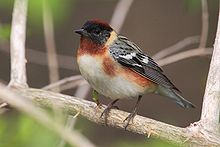
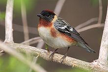

| Bay-breasted Warbler | |
|---|---|
|  | |
| Conservation status | |
| Binomial name | |
| Dendroica castanea (Wilson, 1810) |
| Bay-breasted Warbler | |
|---|---|
|  | |
| Conservation status | |
| Binomial name | |
| Dendroica castanea (Wilson, 1810) |
The Bay-breasted Warbler, Dendroica castanea , is a New World warbler. They breed in northern North America, specifically in Canada, into the Great Lakes region, and into northern New England.
These birds are migratory, wintering in northwest South America and southern Central America. They are very rare vagrants to western Europe.
This species is closely related to Blackpoll Warbler, but this species has a more southerly breeding range and a more northerly wintering area.
The summer male Bay-breasted Warblers are unmistakable. They have grey backs, black faces, and chestnut crowns, flanks and throats. They also boast of bright yellow neck patches, and their underparts are white. They have two white wing bars, as well.
Breeding females essentially resemble washed out versions of the male. The females are greyish above and white below, with much weaker head patterns. The females also only have chestnut markings on small flank patches, although tiny tints in their grey crowns have been observed.
Non-breeding birds have greenish heads, greenish upperparts and yellowish breasts. The yellow extends to the belly of young birds. The two white wing bars are always present in every stage of life. These birds differ from non-breedering Blackpoll Warblers in the absence of breast streaks.
Their breeding habitats are coniferous woodlands. Bay-breasted Warblers nest in conifer, laying 3-5 eggs in a cup-shaped nest. More eggs are laid in Spruce Budworm years.
These birds feed on insects, and the numbers of these birds vary with the abundance of the Spruce Budworm. These birds will also feed on berries and nectar in wintertime.
Their songs are repetitive high-pitched si si si's.

{kind=link}